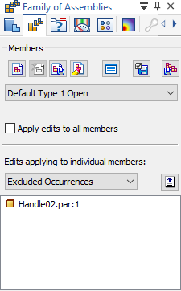
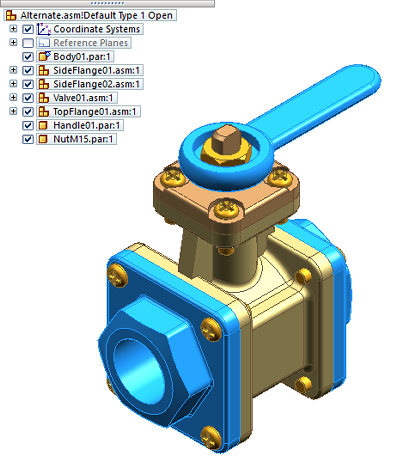
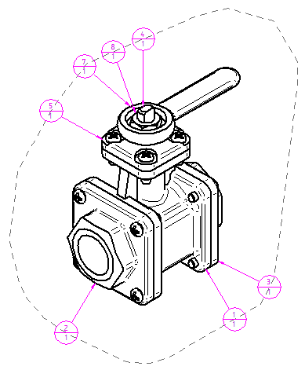
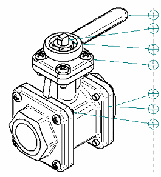
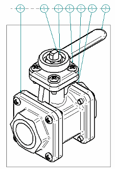
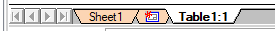

Family of Assemblies (FOA) parts lists
What is a Family of Assemblies (FOA)?
A Family of Assemblies (FOA) is an assembly in which most parts are identical in the source assembly, but some parts and subassemblies are different between the individual family members. For example, an FOA may have different variations of components, fastener types, trim, and accessories. In Solid Edge, you use the Alternate Assemblies functionality to create and manage your source assembly document and family member documents.


For information about modeling a family of assemblies, see:
Creating a Family of Assemblies (FOA) parts list
Although creating a parts list for a Family of Assemblies is much the same as creating
a parts list for other types of assembly models, you use a different command to do
so. After you select the Family of Assemblies Parts List command  and click a FOA drawing view, you then have the option of using the Member Selection tab (Family of Assemblies Parts List Properties dialog box) to select as many or as few FOA members to include in the parts list before you place
it. This tab is only available when you use the Family of Assemblies Parts List command. For more information, see Create a family of assemblies parts list.
and click a FOA drawing view, you then have the option of using the Member Selection tab (Family of Assemblies Parts List Properties dialog box) to select as many or as few FOA members to include in the parts list before you place
it. This tab is only available when you use the Family of Assemblies Parts List command. For more information, see Create a family of assemblies parts list.
In the following table, the default family of assemblies parts list structure and column layout is shown, with columns for Item Number, File Name (no extension), Author, and a Quantity (Member Name) column for each member of the FOA that is in the selected drawing view. In this case, that member is named (Default Type 1 Open).
The last three columns in this table represent FOA members that are not shown in the ballooned drawing view, but which were included in the parts list using the Member Selection tab.
|
Item Number |
File Name (no extension) |
Author |
Quantity (Default Type 1 Open) |
Quantity (Type 2 Open) |
Quantity (Type 1 Closed) |
Quantity (Type 3 Open Reverse Handle) |
|---|---|---|---|---|---|---|
|
1 |
Body01 |
axlbsm |
1 |
1 |
1 |
1 |
|
2 |
SideRange01 |
axlbsm |
1 |
1 |
1 |
1 |
|
3 |
SideRange02 |
pct |
1 |
1 |
1 |
1 |
|
4 |
Valve01 |
pct |
1 |
1 |
1 |
1 |
|
5 |
TopFlange01 |
pct |
1 |
0 |
1 |
0 |
|
6 |
TopFlange02 |
jimrobinson |
0 |
1 |
0 |
1 |
|
7 |
Handle01 |
pct |
1 |
0 |
1 |
0 |
|
8 |
NutM15 |
pct |
1 |
1 |
1 |
1 |
|
9 |
Handle02 |
P.BAILLY |
0 |
1 |
0 |
1 |
Before you place the parts list on a drawing sheet, you can continue to use the Family of Assemblies Parts List Properties dialog box to customize it. For example, you can add a title, and add columns to display the Document Number, Material, and add other model-derived information. You also can customize the item balloon shape or balloon shape arrangement pattern and order.
The default balloon arrangement pattern is Outline:

Balloons arranged using the pattern options Right and Top:


Inserting new sheets for your FOA parts list
Your FOA parts list may reference a source assembly with just a few FOA members or many family members. When you create a new parts list for a large assembly, you can choose to place it on a separate table sheet, rather than on the active sheet. New table sheets can be generated automatically by the parts list command.
To do this, you can select one of the predefined table styles, ANSI - New Sheets or ISO - New Sheets, from the Styles list on the command bar:
You also can specify this in the Parts List Properties dialog box, on the Location tab, by selecting the Create new table sheets option. The FOA parts list is placed on a sheet with the name Table1:1.

Updating a FOA parts list
For a standard parts list, updating a drawing view with a gray out-of-date border updates its parts list by default, as the parts list references only what is shown in the drawing view.
A FOA parts list can be out-of-date due to a change to one of its members in the source assembly that is not shown in the drawing view. In this case, the drawing view will not display a gray out-of-date border, but the parts list table will.
There are two ways to update a FOA parts list:
-
To update the drawing view and the parts list, on the ribbon, select the Update Views command .
-
To directly update the table, right-click the FOA parts list and select the Update shortcut command.
Linking and updating multiple parts lists
Like other parts lists, you can use the Link to Active option  on the Parts List Properties command bar to create multiple parts lists for the same drawing view with the same item numbers.
If there are three parts lists that are linked to the active parts list and you change
the item number setting in the active parts list, then the other parts lists show
the out-of-date gray box around them. When you update the active parts list, the linked
parts lists are updated, too.
on the Parts List Properties command bar to create multiple parts lists for the same drawing view with the same item numbers.
If there are three parts lists that are linked to the active parts list and you change
the item number setting in the active parts list, then the other parts lists show
the out-of-date gray box around them. When you update the active parts list, the linked
parts lists are updated, too.
To link two parts lists:
-
Select the parts list you want to link to and use the Make Active command on its shortcut menu to designate it as the active parts list.
-
Create another parts list, and select the Link To Active option on the command bar to link them.
Item numbers in FOA parts lists
Item numbers are always read from all member components in the FOA source assembly document. This is independent of the members that were selected for inclusion in the FOA parts list.
You can specify whether the item numbers that appear in the parts list are created dynamically when you select the Family of Assemblies Parts List command, or based on a source item number scheme defined in the source assembly document.
-
Assembly item numbers are created in the assembly when the Maintain item numbers check box is selected on the Item Numbers page (Solid Edge Options dialog box) in the assembly document.
-
To use the assembly-generated item numbers in the FOA parts list, select the Use assembly generated item numbers check box on the Options tab in the Family of Assemblies Parts List Properties dialog box.
If using assembly-generated numbers, and if any unique part document in the source assembly has more than one item number, then this ambiguity will be shown in FOA parts list by showing the same item in two consecutive rows with two different item numbers and an ambiguity mark (*). This means that one or more members in the FOA source assembly document are out-of-date and part numbers are not updated.
How do I
Create a parts listCreate a subassembly parts list
Create an exploded parts list
Create a total length parts list
Create a parts list for flexible hoses and tubing
Create a family of assemblies parts list
Exclude parts from an exploded parts list
Open a model from a parts list
Example: Show custom occurrence properties in a parts list
Example: Show custom properties and materials in a parts list
Example: Show sheet metal material thickness in a parts list
Renumber a parts list
Change the active parts list
Display assembly occurrences in a drawing view or parts list
Convert a parts list to a table
Copy a parts list to the clipboard
Learn more
Parts listsAssembly part views and parts lists
Subassembly drawing views and parts lists
Exploded parts lists
Custom occurrence properties in parts lists
Occurrence quantity overrides in parts lists
Item numbers in parts lists
Saving and reusing the parts list format
Look up more details
Parts List commandParts List command bar
Parts List Properties dialog box
Copy Contents command
Convert To Table command